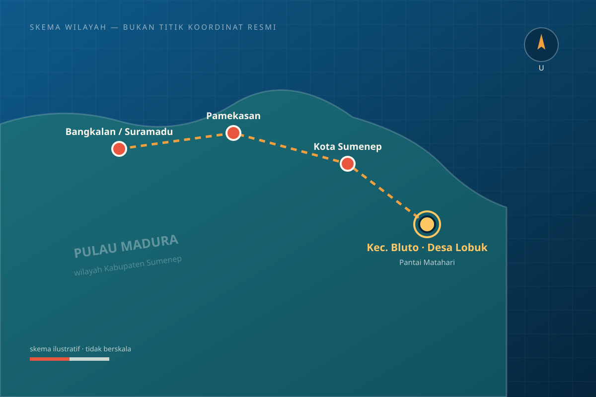

Lokasi & Akses
Peta satelit Desa Lobuk
Peta disematkan langsung dari Google Maps Embed API dengan tampilan satelit. Ganti jenis tampilan, atur zoom dan tinggi peta, serta masukkan koordinat resmi pantai bila sudah diperoleh dari desa.
Alamat administratif
Desa Lobuk
Maps Embed API · Satelit
Sumber peta
Zoom
16
Tinggi peta
520 px
Titik koordinat resmi pantai (opsional)
Tampilan

Memuat peta satelit Google Maps…
Perlu koneksi internet.
Menyiapkan peta
Maps Embed API
Memakai nama wilayah
Pindahkan peta ke
Cara kerja peta. Dengan kunci API, sistem memanggil
maps/embed/v1/place (nama wilayah) atau maps/embed/v1/view (koordinat resmi) dengan maptype=satellite. Tanpa kunci, sistem memakai sematan Google Maps biasa dengan parameter satelit t=k. Titik koordinat resmi Pantai Matahari belum tersedia dari mitra, sehingga peta awal memakai nama wilayah. Bila sematan tertahan jaringan atau kebijakan layanan, gunakan Buka di Google Maps atau Skema.
Etape Perjalanan
Gambaran rute menuju lokasi
Etape berikut adalah gambaran umum perjalanan lintas Madura. Rute detail, waktu tempuh, dan biaya menunggu konfirmasi resmi Pemerintah Desa Lobuk.